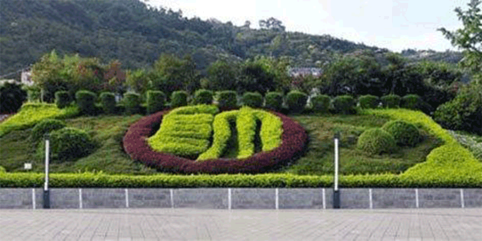
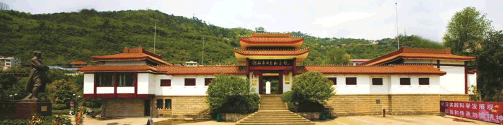
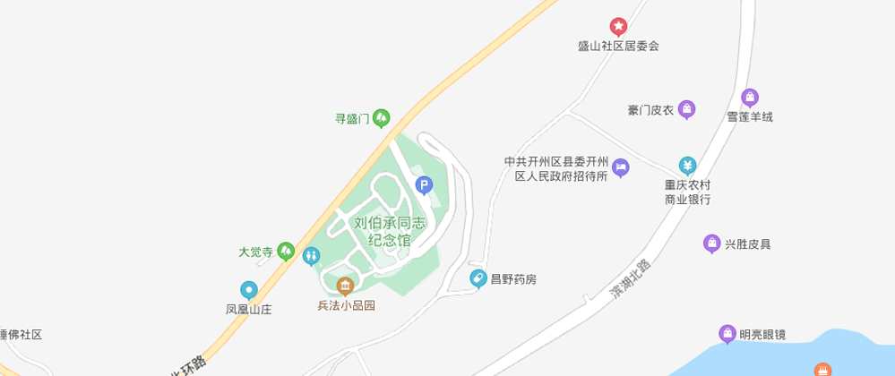
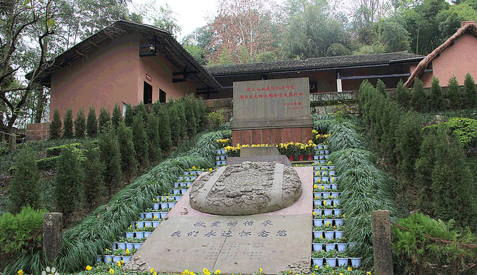
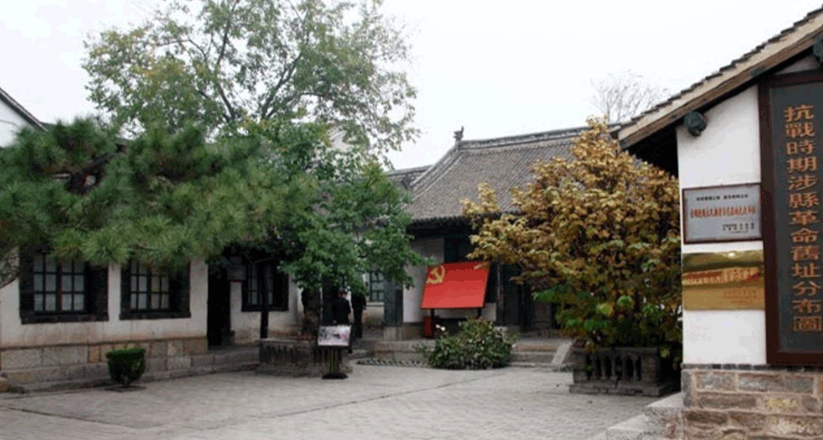

刘伯承同志纪念馆为现代仿古建筑。高低错落，大坡屋顶，体现了下川东的建筑艺术风格，其气势宏伟，与山脚下城市连接的是一座石堡坎，大石梯越于城根，正达馆前东侧，高48米，宽8.1米，共240步，石梯起步两旁雕有仿唐式大型石狮一对，该石狮为四川美术学院龙德辉教授设计。正面是红色花岗石与黑色大理石镶嵌的大型壁画《山河颂》，该壁画为四川美术学院夏培耀教授设计，属纪念馆配套工程；分上中下三级，远观是一幅祖国的山河图，近看又有相互的独立性。作品在中外石梯堡坎建筑上还尚属首例，取材于祖国的大好河山，山石流云，挺拔青松，旭日落照，其寓意深刻。
机构设置:
1992年，设立景区管理单位——刘伯承同志纪念馆管理处，为全额拨款五级职员单位、区委直属正处级事业单位，业务上接受区委宣传部、区旅游局、区文广新局指导。管理处领导职数设一正三副，主任由区委宣传部部务会成员兼任；下设办公室、宣教科、文物科、安保科、故居管理所5个内设科室。

文化活动：
刘伯承同志纪念馆和故居常年设刘伯承同志生平业绩成列展览和故居游览祭拜活动。利用春节、妇女节 、清明节、劳动节、儿童节、党的生日、建军节、国庆节、元旦节和刘伯承诞辰纪念日等重大节庆日和纪念日，针对不同观众对象开展主题教育活动。
免费政策：
2020年2月，为致敬奋斗在抗“疫”一线的医务工作者，刘伯承同志纪念馆（故居）自恢复运营之日起至2020年12月31日，对全国所有医务工作者实行免费参观政策。
开放时间
周二至周日9：00—17：00（16:30停止入馆），周一闭馆维护。
交通路线
自驾
重庆主城区经渝万高速再由万开高速到达开州，经由开州城区、石龙大桥、北环路即可到达，全程约320公里，途经复盛服务区、垫江服务区、梁平服务区、万州服务区。（四川、陕西等周边区县经开达高速，开州出口下道）
汽车
在龙头寺汽车站乘坐重庆至开州大巴，全程约300公里，约3.5小时。到达开州中心客运站后乘坐出租车直接到达刘伯承同志纪念馆，或者乘坐开州公交9路、10路到达。在龙头寺汽车站乘坐重庆至开州大巴，全程约300公里，约3.5小时。到达开州中心客运站后乘坐出租车直接到达刘伯承同志纪念馆，或者乘坐开州公交9路、10路到达。
地理位置
刘伯承同志纪念馆位于重庆市开州区北环路781号。

地理位置：
刘伯承故居位于重庆市开州区赵家街道，距开州区城28公里，据重庆市万州区50公里，是原四川省、现重庆市文物保护单位。故居占地面积8.65亩。坐落在风光旖旎的小华山一台地沈家湾，门前的浦里河沿山脚缓缓流过，直通长江。故居翠竹环抱，地貌特异，颇多传说。可遥望对面云雾飘浮酷似睡佛的山岭，俯瞰河边农贸兴旺的赵家街道。看上去山腰像一把座椅，椅前的一台地名日“点将台”，山对面广阔的坝子呼之为“阅兵场”。
开馆时间：
刘帅故居周一闭馆维护，周二至周日对外免费开放。

地理位置：
刘伯承故居，位于位于河北省邯郸市涉县赤岸村。当年曾被称为129师家属院，邓小平的大女儿邓林、二女儿邓楠在这里出生。南房5间为129师司令部作战处。门前是刘华清题写的刘邓旧居匾额，中院是首长住宿处兼办公室。南屋是刘邓旧居。东屋为二层楼房，是李雪峰的宿舍和办公室,上院是司令部作战室，为机关办公地，院东南角有一防空洞。后院的刘伯承、邓小平、太行区党委书记赖若愚的宿办室。
刘伯承墓：
1990年10月，邓小平同志亲笔为“将军岭”题写了岭名，为“刘伯承元帅纪念亭”题写了亭名。
1986年10月7日，刘伯承元帅在京逝世。遵照他的遗嘱，10月27日，由刘帅子女刘太行、刘太迟、刘雁翎和中央军委办公厅、总参管理局负责同志护送，将刘帅灵骨安放在将军岭第一个129台阶处，并建造了纪念厅。

刘伯承同志纪念馆，位于重庆市开州区汉丰街道盛山公园内。1990年12月奠基，1992年12月4日刘伯承诞辰100周年纪念日正式开放，邓小平题写“刘伯承同志纪念馆”馆名。
刘伯承同志纪念馆占地7.58亩，由主展馆和东西部组成。主展览馆分内外两进院落，内院为陈列布展厅，共有展厅6间，以回廊相连，外院有书画厅。纪念馆内的陈列布展按历史轨迹，分为“壮志英华，从戎救国”、“土地革命，屡建奇功”、“烽火抗战，尽显神威”、“解放战争，功勋卓著”、“开国元勋，再铸伟业”、“一代名帅，风范千秋”六部分，展线长达520米，陈列着珍贵图片630张，实物和文献资料358件，通过声光电科技手法生动再现了刘伯承元帅充满传奇的一生。
2009年6月，被国家文物局评定为国家三级博物馆。 2012年12月，刘伯承同志纪念馆被国家旅游局批准为国家AAAA级旅游景区。 2015年12月，刘伯承纪念馆入选长江三峡30个最佳旅游新景观。
关闭